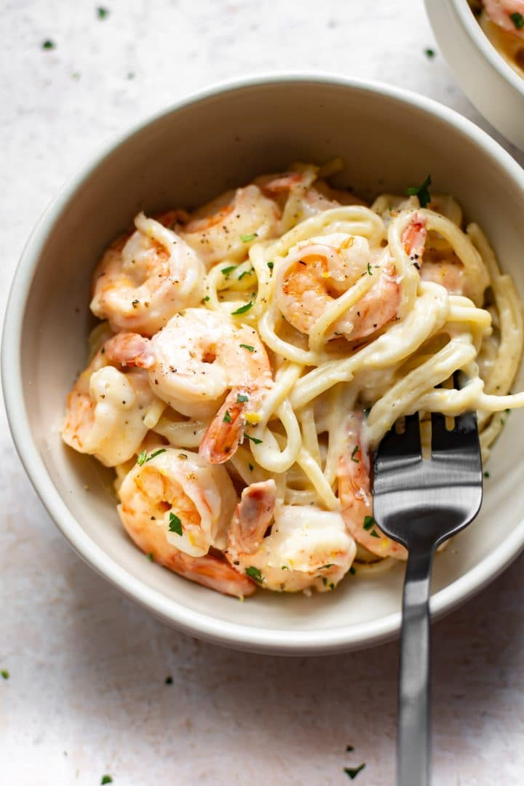

Creamy Shrimp Pasta

Image from saltandlavender
Description
This is Mari's favorite dish and one of the first ones she made for me. It is a creamy sauce with a lemony tang with shrimp and pasta.
It's simply amazing.
Ingredients
- 1 lb of shrimp, size to preference
- 1 lb pasta (I prefer linguini)
- 2 lemons
- 1 tbsp butter
- 6 cloves garlic, minced
- 1/4 gallon (1/2 box) of heavy whipping cream
- salt and pepper, to taste
-
- 1/2 cup shredded parmesan cheese
Steps
- Let puff pastry sheets come to room temperature